使用MSYS2在Windows编译GMP64位动态库
下载并安装MSYS2
在MSYS2官网下载msys2-x86_64-20220603.exe，打开并直接完成安装。
如果官网太慢，可以在清华源下载msys2-x86_64-20220603.exe。
我将它安装在了D:\msys64下。
安装完成后会自动打开一个窗口，不用管它。
接下来需要将D:\msys64\mingw64\bin这个目录添加到系统变量Path中，如图：
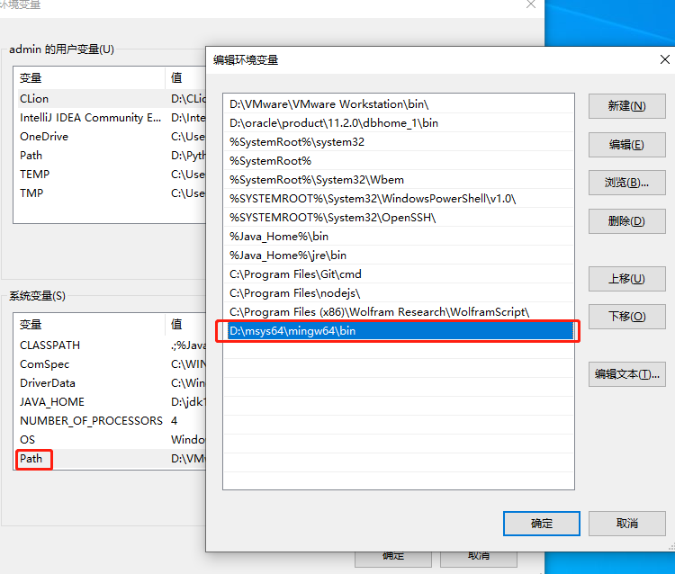
下载GMP库
在GMP官网下载gmp-6.2.1.tar.xz，文件解压后存放在D:\msys64\home\admin\gmp-6.2.1中，其中admin是用户名。
正式安装
打开msys2根目录下的mingw64.exe，打开后窗口如下：
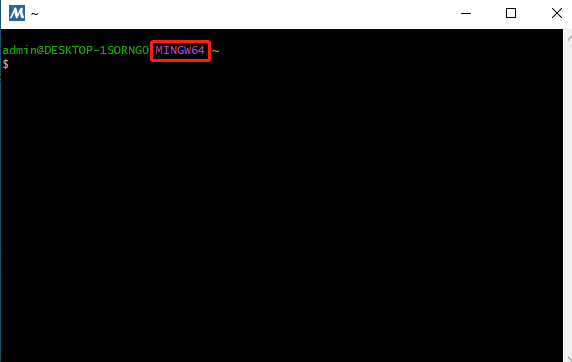
注意红框是MINGW64.
如果执行命令时下载速度太慢，可以先参考这里将镜像源改成优先使用清华源。也就是直接执行如下代码：
1 | sed -i "s#mirror.msys2.org/#mirrors.tuna.tsinghua.edu.cn/msys2/#g" /etc/pacman.d/mirrorlist* |
- 先更新软件源和软件
1 | pacman -Syu |
- 安装如下内容
1 | pacman -S mingw-w64-x86_64-gcc |
- 跳转到解压后的GMP库的根目录，并进行动态库编译。
这一部分的命令需要执行相当长的时间，电脑约运行了约\(6\)个小时。
（\(2022\)年\(11\)月\(19\)日更新，在新电脑上编译用了不到半小时就完成了，取决于配置）
1 | cd gmp-6.2.1/ |
执行完这些命令看到这个就可以了。
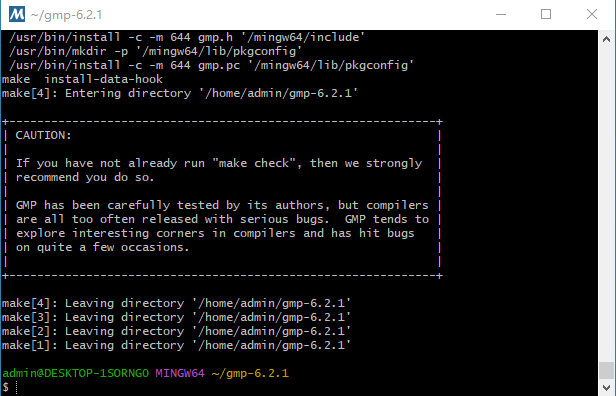
正式使用GMP库
如果直接使用命令行进行编译，那么编译命令需要添加多一个参数，如下：
1 | g++ main.cpp -lgmp |
CodeBlocks使用
在Codeblocks中的设置——编译器——全局编译器设置——可执行工具链切换成msys2中的MinGW，如图
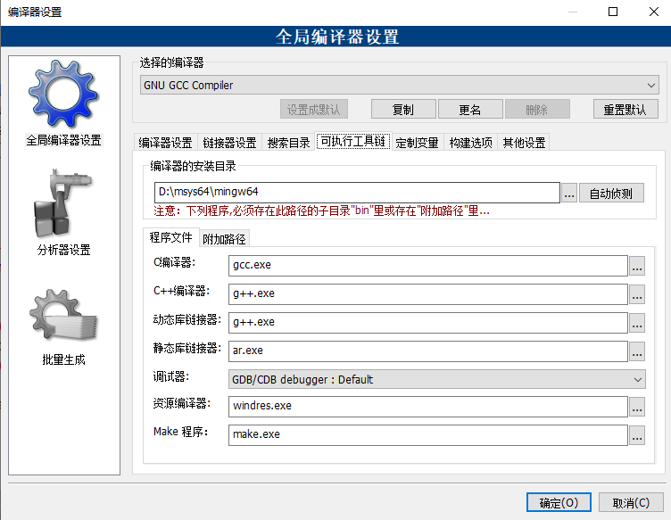
然后再在连接器设置这里添加一个参数-lgmp即可。
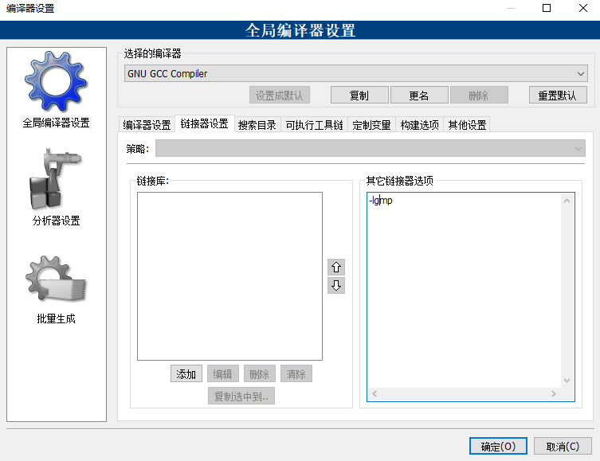
Clion使用
同样也需要先在Clion切换成MSYS2中的MinGW，如图
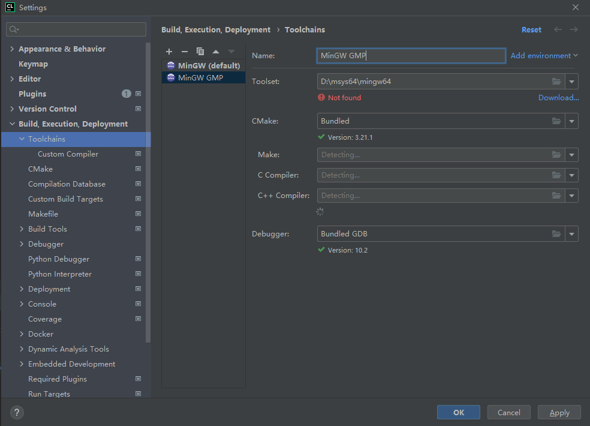
如果发现这个红色警告Not
Found，那么将\msys64\mingw64下的include
文件夹整个复制到\msys64\mingw64\x86_64-w64-mingw32下。
创建一个新的项目后，需要在CMakeLists.txt中添加如下代码。
1 | target_link_libraries([Project-Name] D:\\\\msys64\\\\mingw64\\\\bin\\\\libgmp-10.dll) |
其中[Project-Name]是项目的名称。
Vscode使用
新建一个文件夹，并且写好示例代码A.cpp。
使用快捷键Ctrl+F5，显示该窗口后点击C++ (GDB/LLDB)，并点击安装好的MSYS2的g++.exe。
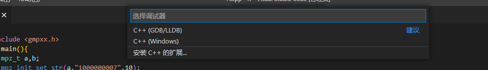
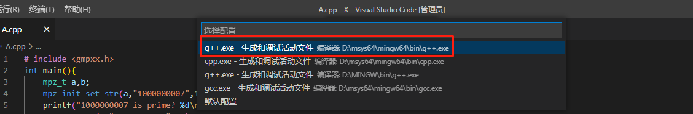
运行后发现报错。打开/.vscode/task.json，在这个地方添加编译参数-lgmp。
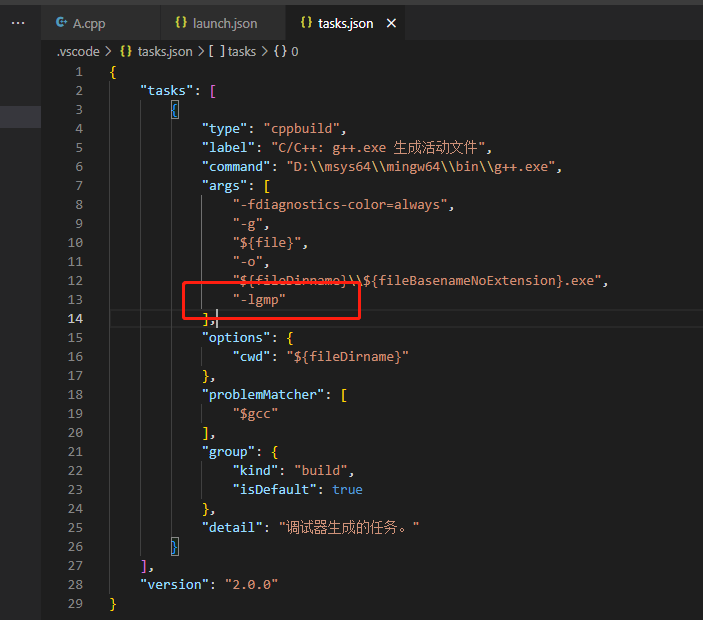
再一次使用Ctrl+F5运行即可。
示例代码执行
1 |
|
- 直接使用命令行来编译
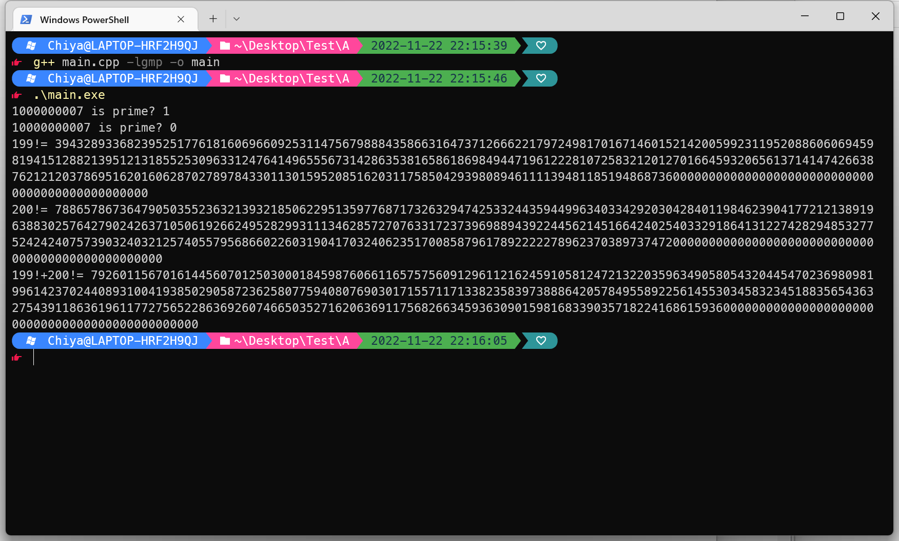
- CodeBlocks执行结果
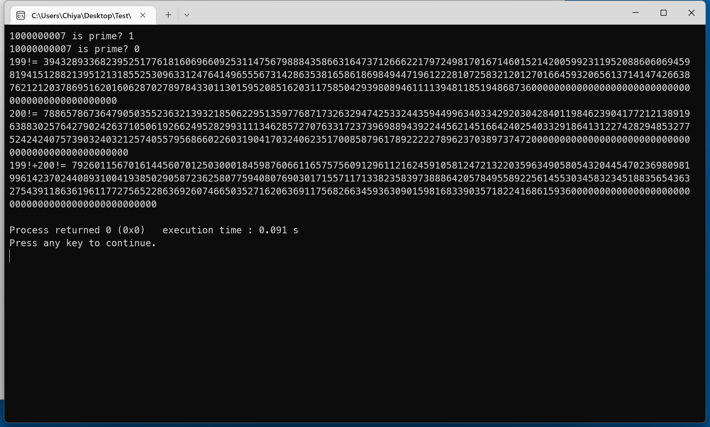
- Clion执行结果
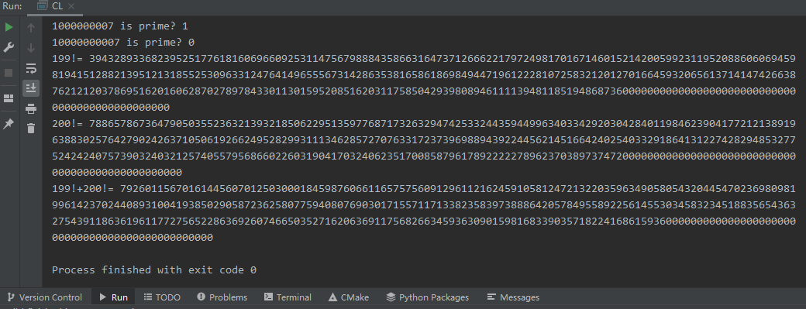
- Vscode运行结果
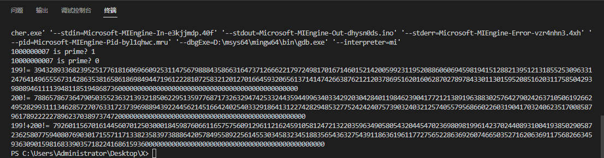
另附：GMP库的文档。相关参考：[1]